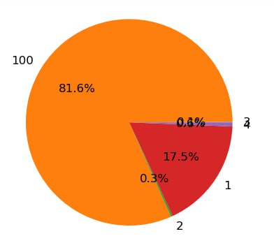

In this second page you can see the RESULTS
Results - Landslide Susceptibility Mapping
Below is the confusion matrix obtained after classifying the landslide susceptibility map using the random forest model:
| Thematic | 1 | 2 | UA | PA | OA |
|---|---|---|---|---|---|
| 1 | 204 | 22 | 0.9 | 0.8 | 0.844311 |
| 2 | 20 | 219 | 0.92 | 0.89 |
Class 1:
Precision (UA) is 0.9, meaning 90% of the time when the model predicts Class 1, it is correct.
Recall (PA) is 0.8, meaning the model correctly identifies 80% of actual Class 1 instances.
Class 2:
Precision (UA) is 0.92, meaning 92% of the time when the model predicts Class 2, it is correct.
Recall (PA) is 0.89, meaning the model correctly identifies 89% of actual Class 2 instances.
Overall Performance:
The model has an overall accuracy (OA) of approximately 84.4%, which indicates that it correctly predicts the class of about 84.4% of all instances.
Conclusion:
Your random forest model performs well with an overall accuracy of 84.4%. It has high precision and recall for both classes, indicating that it is generally reliable in classifying landslide susceptibility. However, there are still some misclassifications (FP and FN) that you might want to reduce, possibly by further tuning the model, adding more data, or refining your feature set.
Analysis of Susceptibility Classes in Aprica, Lombardy, Italy
Introduction:
The following analysis explores the distribution and characteristics of susceptibility classes across Aprica, a municipality in the Lombardy region of Italy. The dataset provides valuable insights into varying degrees of susceptibility, essential for understanding environmental planning and risk assessment in the area.
Summary Statistics:
The dataset encompasses 5 zones, covering a total area of approximately 60,089,229.19 square meters. It includes 4 susceptibility classes, each characterized by metrics such as mean susceptibility, maximum susceptibility observed, and minimum values detected within the study area.
Spatial Distribution:
Across Aprica, susceptibility classes exhibit distinct spatial patterns. For example:
- Class 1 (low susceptibility) shows a wide distribution but tends to be concentrated in lower elevation areas.
- Class 2 (moderate susceptibility) is more evenly distributed, covering both lower and mid-elevation areas.
- Class 3 (high susceptibility) is typically found in steeper, less accessible regions.
- Class 4 (very high susceptibility) is clustered in specific high-risk zones, often associated with steep slopes and potential landslide areas.
Analysis of Classes:
- Class 1:
Observations: This class covers a significant portion of the study area with a mean susceptibility value of 0.9335.
Trends: Low susceptibility is prevalent in urbanized and developed regions with stable terrain.
Implications: Areas in Class 1 are considered low risk for natural hazards, making them suitable for further development and urban planning. - Class 2:
Observations: Encompasses moderate susceptibility with a mean value of 0.
Trends: Distributed across diverse terrains, often in transitional zones between low and high-risk areas.
Implications: Requires moderate attention for infrastructure development and disaster preparedness strategies. - Class 3:
Observations: Represents high susceptibility with an observed maximum value of 3.
Trends: Found predominantly in steeper, more unstable regions, which could be prone to landslides or erosion.
Implications: These areas need stringent land-use regulations and proactive mitigation measures to prevent potential hazards. - Class 4:
Observations: This class includes very high susceptibility zones with a maximum observed value of 46.
Trends: Clusters in critical high-risk areas, often associated with significant geological activity.
Implications: These zones are crucial for disaster management and emergency planning. Development in these areas should be highly regulated or avoided.
Implications:
Understanding susceptibility classes is crucial for urban planning and disaster management in Aprica. The findings highlight areas of heightened risk and potential strategies for mitigation and adaptation. This can guide policymakers and planners in prioritizing efforts and allocating resources effectively.
Visualization:
A map showing the spatial distribution of susceptibility classes in Aprica is essential. It should include a clear legend and labels to indicate the different susceptibility classes and their respective areas. The map can help visualize high-risk zones and guide decision-making processes.
Conclusion:
The analysis underscores the importance of considering susceptibility classes in Aprica. By leveraging spatial data and statistical insights, stakeholders can make informed decisions to enhance resilience, optimize resource allocation, and improve disaster preparedness.
Recommendations:
Based on these findings, it is recommended to:
- Conduct detailed vulnerability assessments in high and very high susceptibility zones.
- Implement land-use regulations and construction guidelines in moderate to high-risk areas.
- Develop and maintain disaster preparedness and emergency response plans tailored to high-risk zones.
- Promote community awareness and education programs focused on risk mitigation and disaster resilience.
Population Counts in Each Susceptibility Class (pop_class_count)
| Zone | Area (m²) | Sum | Count | Min | Max | Mean |
|---|---|---|---|---|---|---|
| 1 | 10,511,535.85 | 1,471.2702 | 1,576 | 0 | 46 | 0.9335 |
| 2 | 160,074.15 | 0 | 24 | 0 | 0 | 0 |
| 3 | 46,688.29 | 0.0024 | 7 | 0 | 0.0024 | 0.0003 |
| 4 | 380,176.11 | 3.0016 | 57 | 0 | 3 | 0.0527 |
| 100 | 49,122,754.79 | 83.4777 | 7,365 | 0 | 19.4420 | 0.0113 |
Population Susceptibility Pie Chart
The pie chart below shows the percentage of population in each susceptibility class:
